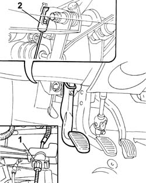
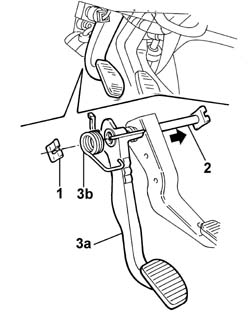
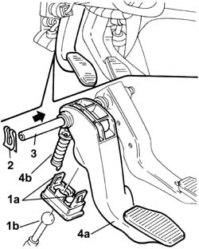

3330B26 clutch pedal - r+r
- Path
- Procedures > 33 BRAKES > 3330 HYDRAULIC BRAKE SYSTEM > 3330B pedal unit > 3330B26 clutch pedal - r+r
- Kind
- repair procedure (removal / refitting; the operation number is the code)
- Applies to
- engines: 1.2 8v, 1.9 DIESEL; all production periods
- Interactive page
- https://sloeber94.github.io/elrnDB-fDbl/en/#/2584650
Applies to: engines: 1.2 8v; all production periods
 Removing
Removing
 Refitting
RefittingDisconnect the battery negative terminal lead.
1. Disconnect the clutch control cable from the engine bay.
2. Disconnect the control cable from the clutch pedal.

Applies to: engines: 1.2 8v; all production periods
1. Remove the retaining clip (clutch pedal end).
2. Partially withdraw the pedal retaining pin.
3. Remove clutch pedal (3a) and return spring (3b).

Applies to: engines: 1.2 8v; all production periods
Refitting
RemovingPosition the clutch pedal and return spring.
Insert the pedal retaining pin and secure using the retaining clip.
Connect the clutch cable to the pedal.
Connect the clutch cable to the lever on the gearbox.
Op. 1820A14 CLUTCH PEDAL - ADJUST TRAVEL.
Connect the battery negative terminal lead.
Applies to: engines: 1.9 DIESEL; all production periods
Removing
RefittingOp. 1060D42 SWITCH ON CLUTCH PEDAL- R. R (DIESEL ENGINES).
1. Press the clutch pedal to the limit of its travel, then disengage the two clips (1a) securing the device retaining the rod of clutch master cylinder master cylinder (1b) to the pedal.
2. Remove the retaining clip (clutch pedal end).
3. Partially withdraw the pedal retaining pin.
4. Remove the clutch pedal (4a) complete with pedal return spring device (4b).

Applies to: engines: 1.9 DIESEL; all production periods
Refitting
RemovingPosition the clutch pedal complete with return spring device.
Insert the pedal retaining pin and secure by means of the retaining clip.
Connect the rod of the master cylinder to the pedal and press-fit the tabs of the retaining device into their seats on the pedal.
Connect the battery negative terminal lead.